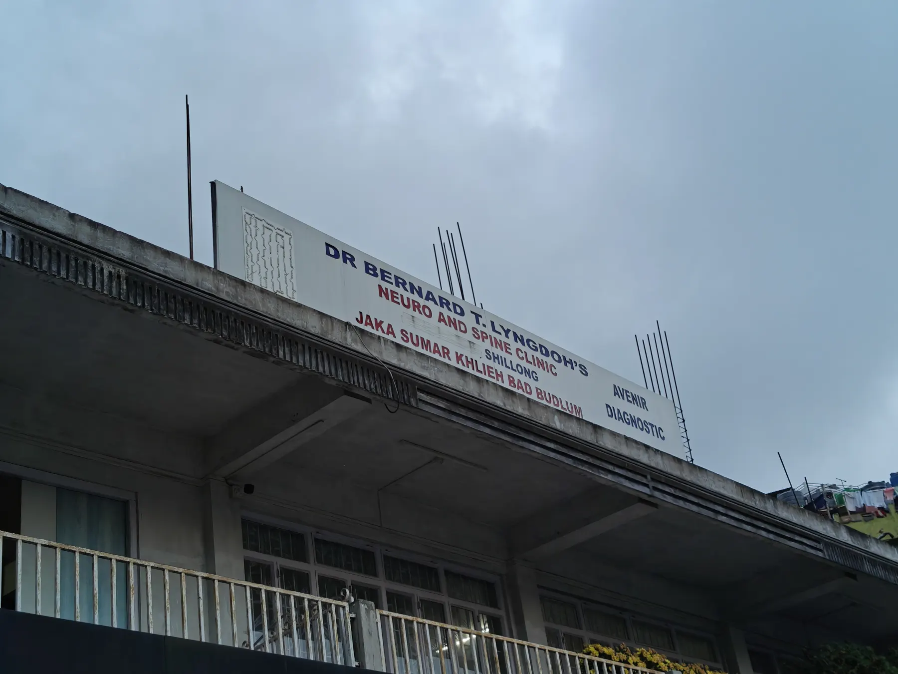
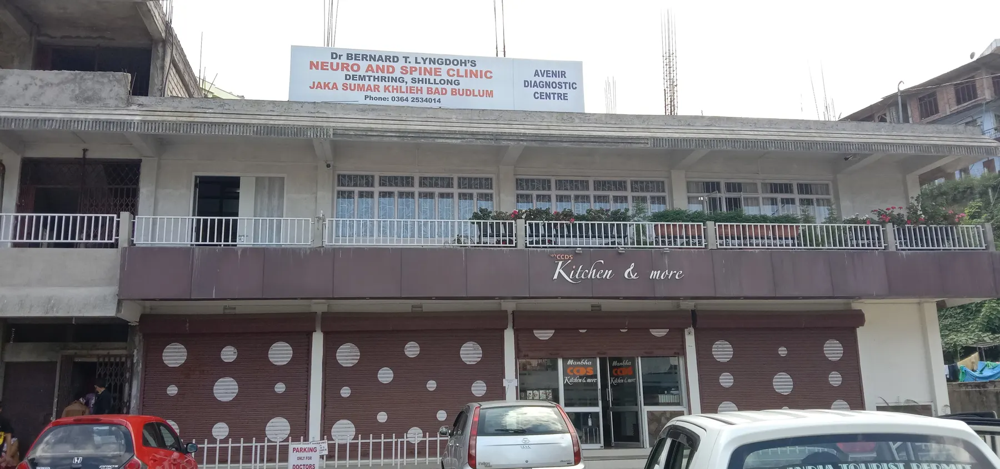
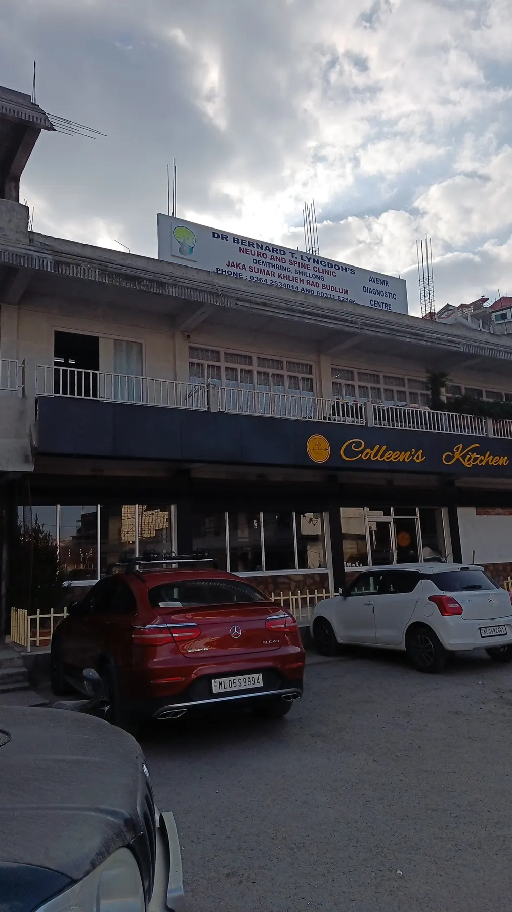
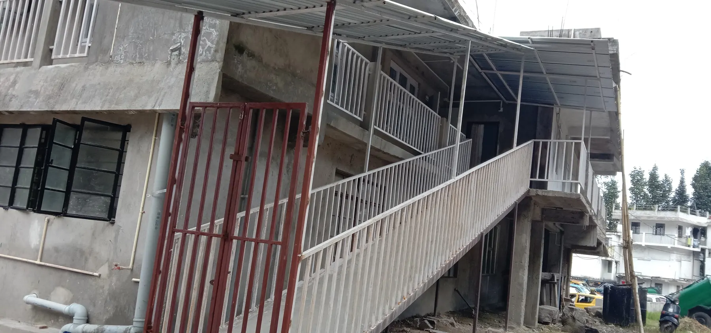
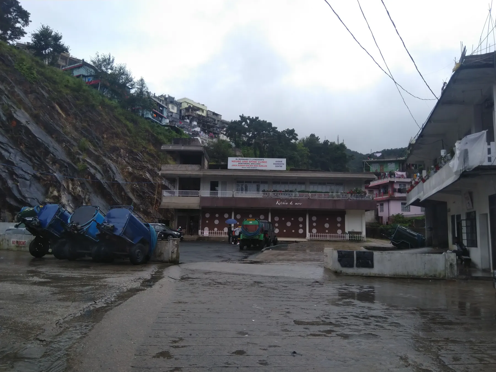
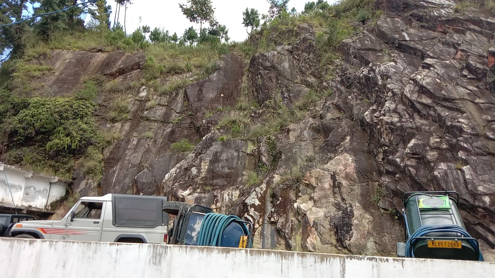
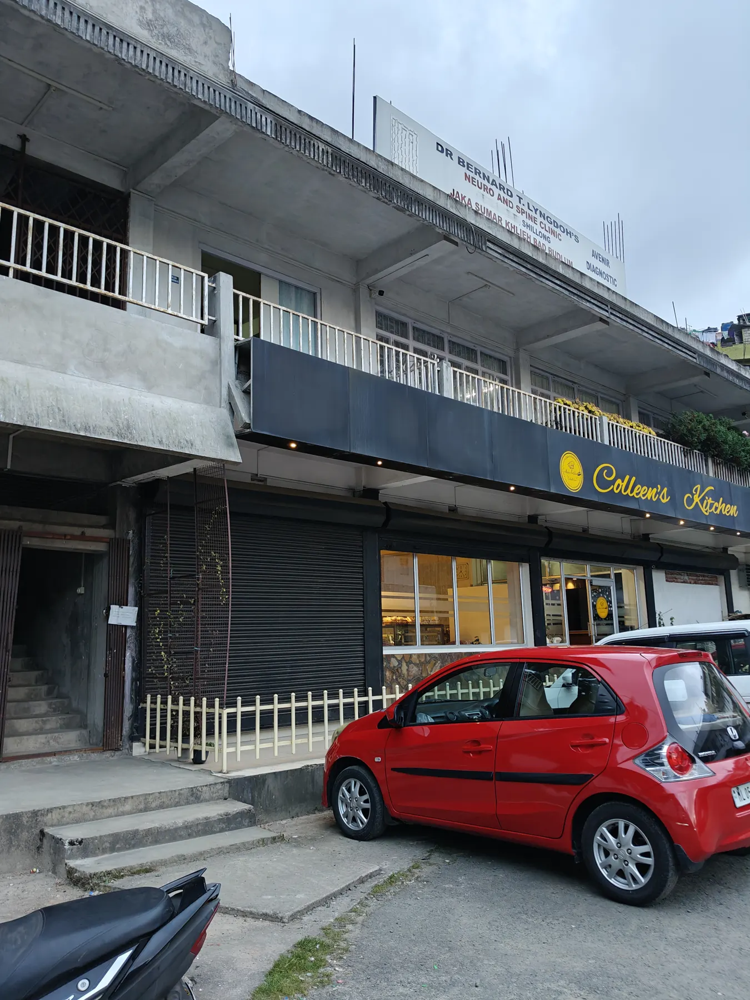
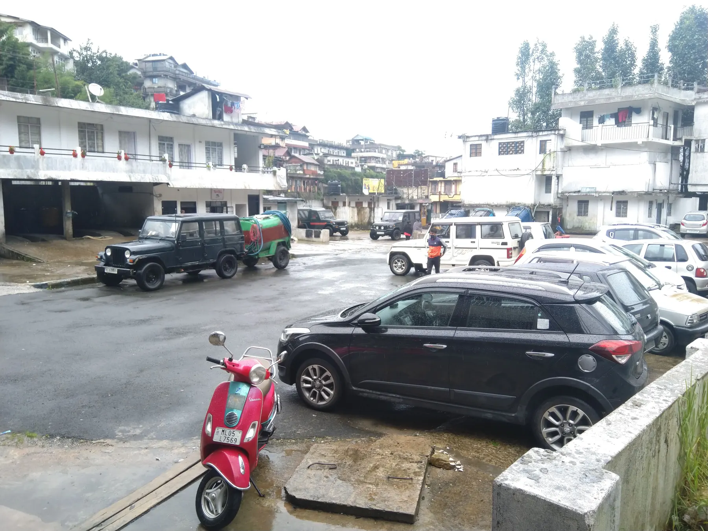

Conditions of the brain, spine & nerves, explained plainly.
Seven common reasons patients come to the clinic, and the procedures Dr. Bernard may recommend. Most visits end with a clear plan, and many with no surgery at all.
Neuro & Spine Clinic · Demthring, Shillong
Dr. Bernard T. Lyngdoh Ryntathiang, a neurosurgeon with more than 20 years of practice, treating brain, spine and nerve conditions for families across Meghalaya and the North East.
01The surgeon
Dr. Bernard has trained and practised in several cities across India before bringing that experience home to Shillong. At his Demthring clinic he sees every patient himself, and when surgery is needed he operates as Consultant Neurosurgeon at Supercare Hospital, a short walk away.
“Neurological care is the cheapest here and there is no compromise on the quality of treatment.”
02What we treat
Seven common reasons patients come to the clinic, and the procedures Dr. Bernard may recommend. Most visits end with a clear plan, and many with no surgery at all.
01 / Spine
Back pain that runs down the leg, numbness or weakness from a disc pressing on a nerve.
Microdiscectomy
Book about this Cr02 / Trauma
Falls and road accidents with bleeding or swelling around the brain that needs urgent relief.
Craniotomy · Decompressive craniectomy
Book about this CSF03 / Fluid
Build-up of fluid in the brain, in infants and adults, causing headaches, balance or memory trouble.
VP shunt
Book about this ICA04 / Vessels
Weak or narrowed blood vessels in the brain and neck, treated before they bleed or block.
Clipping · Embolization · Endarterectomy
Book about this CN V05 / Nerves
Sudden electric-shock pain in the face, often from a blood vessel pressing on a nerve.
Microvascular decompression
Book about this DBS06 / Function
Tremor, Parkinson's and seizures that medicines no longer control well enough.
Deep brain · Vagus nerve stimulation
Book about this Kids07 / Children
Brain and spine conditions in babies and children, treated with care sized for them.
Paediatric brain & spine surgery
Book about this Not sure which one? Start with a consult03Your path to care
Meet Dr. Bernard at Demthring. Bring your earlier reports and a list of medicines.
CT, MRI and X-rays are read with you, not just about you, so you see what he sees.
Medicines, physiotherapy, observation or surgery, with the reasons and the risks spelled out.
When an operation is needed it happens at Supercare Hospital, Demthring: NABH-listed and PM-JAY empanelled.
Physiotherapy and follow-up visits at the clinic until you're back on your feet.
04Find the clinic








| Monday | 9:00 – 6:00 |
|---|---|
| Tuesday | 9:30 – 5:00 |
| Wednesday | 9:30 – 5:00 |
| Thursday | 9:30 – 5:00 |
| Friday | 9:30 – 5:00 |
| Saturday | 9:30 – 5:00 |
| Sunday | Closed |
05Beyond the clinic
Feb – Mar 2024
Brought the 34th annual conference of the Indian Society for Pediatric Neurosurgery to Shillong.
Ongoing
Operating and inpatient care at Supercare Hospital, Demthring, close to the clinic.
2016
October 2016
Helped host the annual conference of the Association of Neuroscientists of Eastern India in Shillong.
06Book a visit
Send a request and the clinic will call you back to confirm a time. In an emergency, go straight to the casualty department at Supercare Hospital.